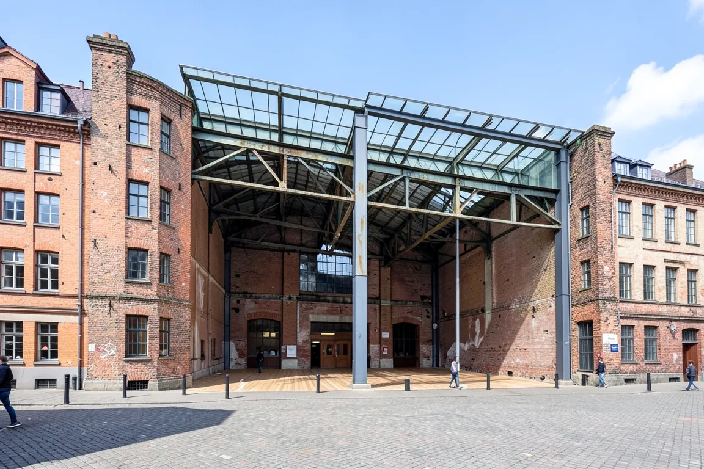

architecture · 1964–present · also: Building reuse, Conversion architecture, Retrofit and reuse
Old buildings given a new use. Scarpa, Aulenti and Herzog and de Meuron keep the shell of a castle, station or power plant, and add a clear new layer that tells old from new.

Core thesis
An existing building has value in its fabric and its memory, so keep it, change its use and let the new work be clearly new beside the old.
Design principles
Keep the existing structure and shell, and record its condition before you plan the new use.
Show the old and the new as two layers, with a gap or a joint of 20 to 100mm between them.
Choose a new material that contrasts with the old in tone and finish: glass, steel, or pale timber against brick and stone.
Keep the big old volume, such as a hall, a nave or a turbine hall of 10 to 35m, and insert new floors inside it.
Cut new openings only where the use needs them, and frame them so the old wall stays readable.
Leave marks of the former use on show, such as rails, stains, crane beams and chimneys.
Anti-patterns
A complete demolition behind a retained front
A fake historical copy that blurs old and new
New work in the same material and style as the old